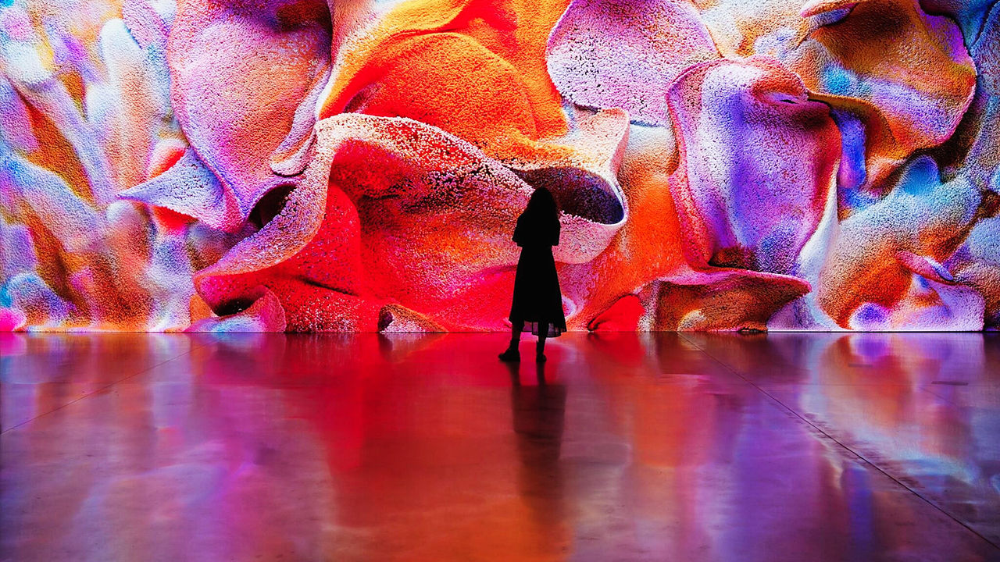

Journal1
Refik Anadol and the hidden cost of AI art

First impressions
My first journal entry is going to be about Refik Anadol, someone whose work I am quite familiar with. He was also part of our readings in CART 210, so I have already had some exposure to his practice and the ideas behind it. On the surface, his work is unreal, something almost out of the ordinary. The scale, colours, movement and sheer amount of information translated into these mesmerising visual experiences make it difficult not to be impressed. However, when you begin to look beyond the surface and learn that much of his practice relies on artificial intelligence and large-scale data processing, you start questioning what actually goes into producing these works. Initially, I thought, well, AI cannot be that bad, right? But the more I looked into it, the more uncomfortable I became.
Water under the ai bridge
What particularly caught my attention was the environmental cost associated with these projects, especially the enormous amounts of water required to cool the data centres that power AI systems. It is strange to think that something designed to be displayed in a gallery, something that exists primarily to provoke wonder and admiration, could have an environmental footprint with consequences far beyond the gallery walls. I came across discussions surrounding the water consumption of AI infrastructure and found myself thinking about how that same water could have been used to support communities experiencing water scarcity. It almost feels absurd that resources essential to sustaining human life are being consumed to generate artificial visual experiences.
We are so easily captivated by what technology can produce that we rarely stop to consider what it takes to produce it.
Experimentation&Responsibility
This raises a bigger question for me about the relationship between technological advancement and artistic responsibility. At what point does experimentation become excessive? And should we really be celebrating technological possibilities without questioning the resources and infrastructure required to make them possible? I do not necessarily think that using AI in art is inherently wrong, nor do I want to dismiss Anadol's work simply because of the technology he uses. In fact, I find his work visually fascinating. But I think that is precisely what makes this contradiction so interesting. We are so easily captivated by what technology can produce that we rarely stop to consider what it takes to produce it.
What stays hidden
I also find myself questioning whether the novelty of these experiences is worth their environmental cost. Art has always involved materials, resources and labour, but the scale and invisibility of the infrastructure behind AI make it particularly difficult to confront. We see the final product, the beautiful projections and immersive environments, but rarely the machinery, energy and water consumption sitting somewhere behind the scenes. Perhaps that is what bothers me most: the disconnect between what we experience as viewers and what remains hidden from us. It makes me wonder whether, as artists and designers, we have a responsibility to look beyond the final image and question the systems that allow us to create it.